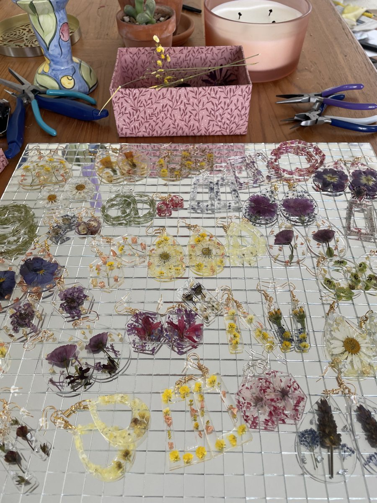

This website
Designed and built with Claude, starting from two sites I admired. I wrote the copy, chose the look, and shipped it.
This is where I push myself, from building with AI to giving back.
Designed and built with Claude, starting from two sites I admired. I wrote the copy, chose the look, and shipped it.

I design and pour resin jewelry with pressed flowers and have sold it at local markets. Ask me about my favorite piece!
Every week I helped host and publish panel discussions where senior artists talked about their work. The series is archived at the Smithsonian's Archives of American Art.
Organized community service events for the New York office, from volunteer days with Encore to clothing and food drives. I also co-created Lunch with a Leader, informal lunches that connected analysts and directors with visiting leaders. It became a monthly series that kept going after I left.
Helped fundraise for and promote a global entrepreneurship program that brings together Israeli Arabs, Jews, and Palestinians to build equally owned tech startups.
psst, I love a good coffee chat